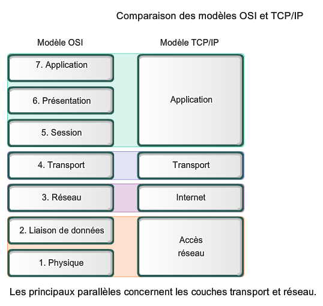
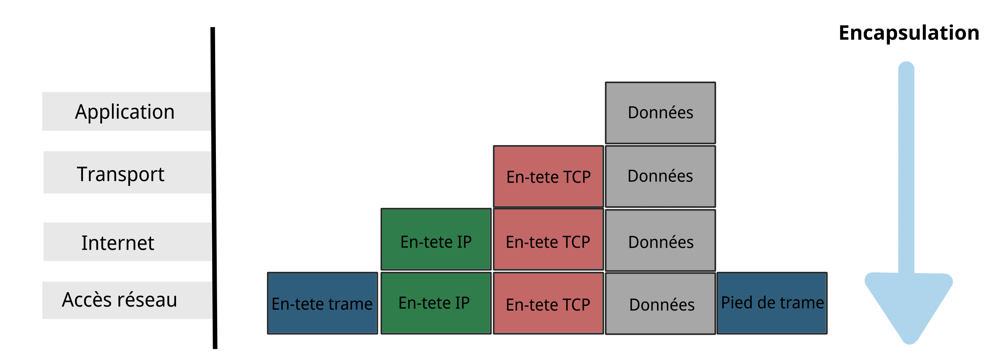
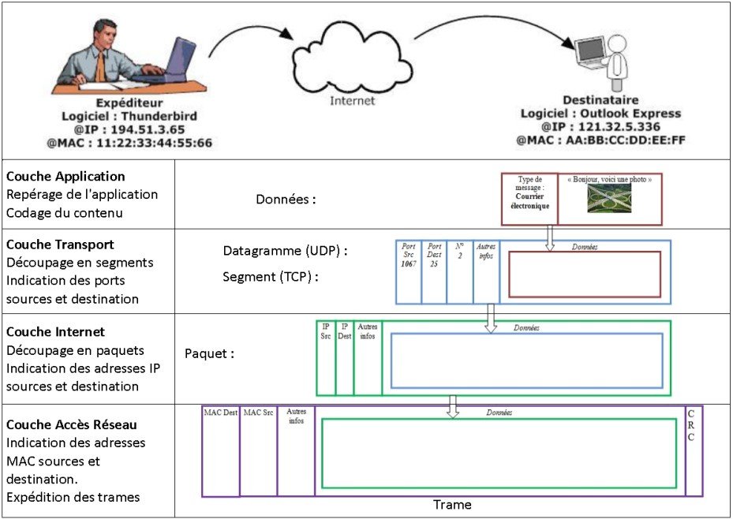
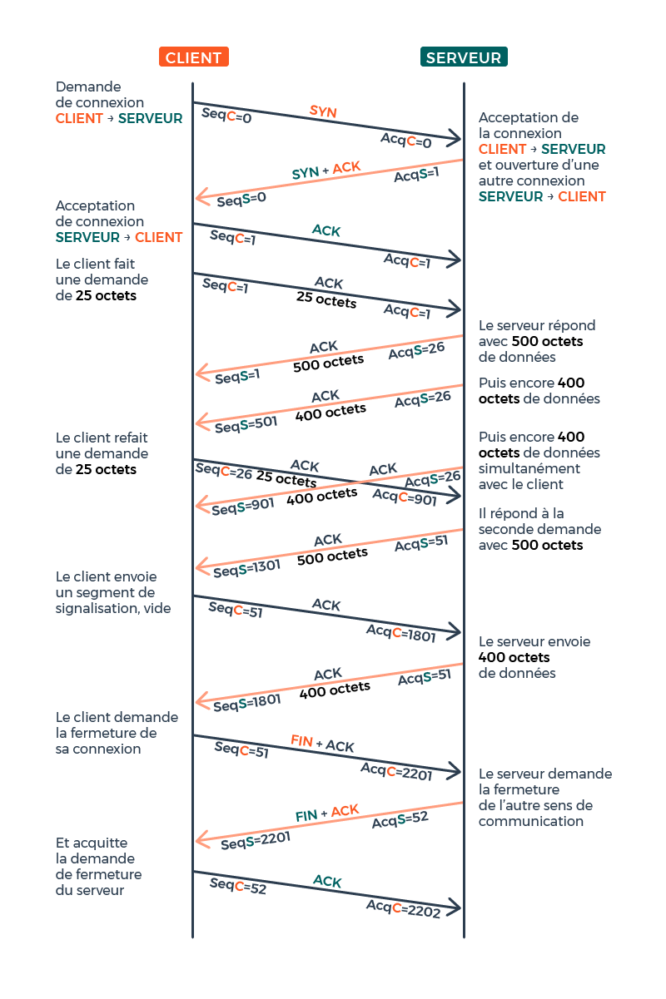
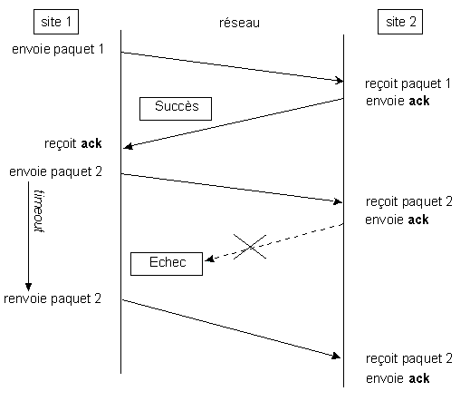
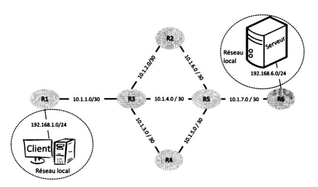
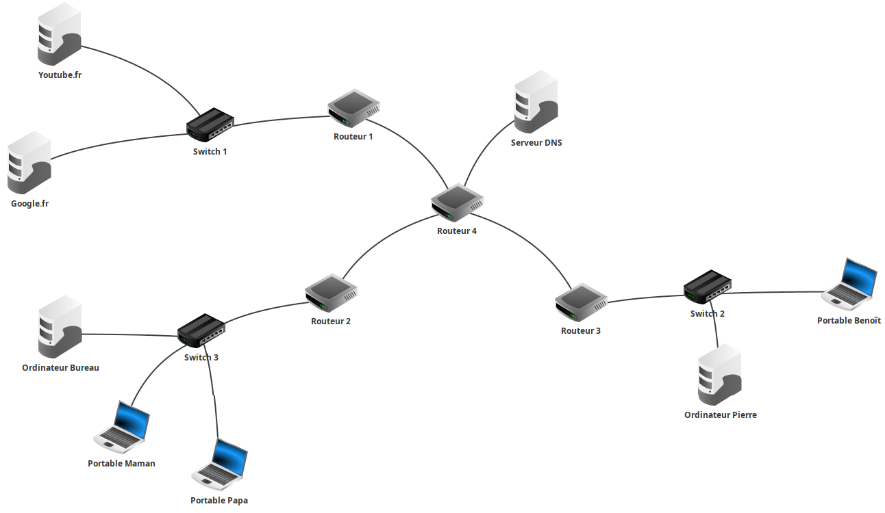
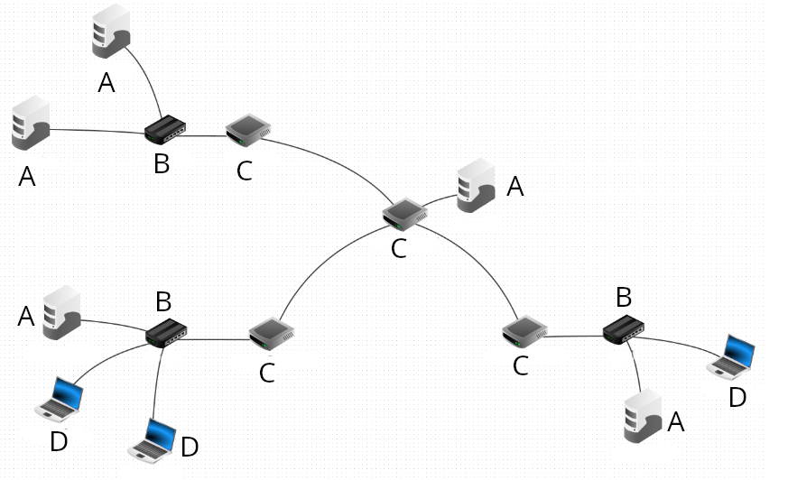

Cours - Réseaux¶
Sources / Liens utiles
Rappels sur l'adressage IP¶
Voici une petite activité (sous la forme d'un notebook) autour de l'adressage IP et des masques de sous-réseau :
Adresses broadcast et multicast
- Broadcast : Cette adresse vous permet d'appeler tous les hôtes (interfaces) à l'intérieur d'un sous-réseau. Une adresse IP broadcast est par exemple
192.168.100.255et un broadcast MAC estFF:FF:FF:FF:FF:FF. - Multicast : Ce type d'adresse permet d'appeler un groupe spécifique d'hôtes (interfaces) dans un sous-réseau.
Vidéo - Qu'est-ce qu'un réseau ?¶
Vous pouvez dans un premier temps essayer de faire l'exercice 1 pour tester vos connaissances sur les composants d'un réseau.
Voici une petite vidéo résumant la constitution d'un réseau (et plus généralement du réseau mondial) :
Vidéo - Le fonctionnement d'internet¶
Le modèle OSI et TCP/IP¶
La transmission des données repose sur un modèle en couches (en 7 couches avec le modèle OSI et en 4 couches avec le modèle TCP/IP,également appelé "modèle internet".)


Schéma plus détaillé - Encapsulation des données (modèle TCP/IP)

Protocoles IP et TCP
Les deux protocoles qui nous intéressent particulièrement sont :
- Le protocole IP (COUCHE RÉSEAU) qui consiste à attribuer à chaque machine une adresse IP unique pour l’identifier sur le réseau, et ainsi transmettre l'information sous la forme de paquets comportant l'indication de l'adresse IP source et de l'adresse IP de destination.
- Le protocole TCP (COUCHE TRANSPORT) qui permet d’assurer la communication de l’information en la découpant en segments, comportant l'indication du port source et du port de destination, et en s’assurant que tous les paquets soient bien reçus et conformes à l’information envoyée. (Il existe un protocole plus rapide mais qui, contraiement à TCP, n'assure pas que toutes les données soient reçues : le protocole UDP.)
Voici un rappel de la manière dont s'effectue l'établissement d'une connexion ainsi que la transmission des données avec le protocole TCP (source de l'image):

Lorsqu'un paquet n'est pas correctement transmis, il est de nouveau envoyé (source de l'image):

Modèle client-serveur et routeurs¶
Un réseau informatique permet la connexion entre différentes machines afin de faciliter la communication entre elles. Le modèle de communication généralement utilisé est le modèle client-serveur, qui permet aux clients d'échanger des paquets d'informations avec les serveurs.
La notion de "client" est large, pouvant désigner aussi bien une application qu'une machine exécutant cette application. De même, le terme "serveur" peut faire référence à l'ordinateur hébergeant un service ou au logiciel fournissant ce service.
Les paquets de bits échangés sont les unités de base transitant sur le réseau physique. Ils résultent de la fragmentation des données à transmettre, telles que des pages web, des courriels ou des vidéos. Ces paquets sont envoyés séparément sur le réseau, et l'information initiale est reconstituée une fois qu'ils atteignent leur destination, que ce soit du côté client ou serveur.
En plus des clients et des serveurs, un réseau informatique est composé de routeurs, pouvant être de deux types : des routeurs d'accès (en bordure de réseau) ou des routeurs internes.
Ces machines ont pour rôle de relayer les paquets dans le réseau pour les acheminer vers leur destination finale. Un routeur fait le lien entre deux réseaux. Les clients et les serveurs sont connectés aux routeurs d'accès via des réseaux locaux (en utilisant par exemple le Wi-Fi ou l'Ethernet). Les routeurs internes sont reliés entre eux sur de plus longues distances à l'aide de fibres optiques, de câbles téléphoniques, de liaisons par satellite, etc. L'interconnexion de ces routeurs via ces liens forme la topologie du réseau.
Par exemple, la figure ci-dessous représente la topologie d'un réseau avec six routeurs.

Les routeurs R1 et R6 sont des routeurs d'accès permettant aux machines Client et Serveur d'accéder au réseau. Les autres routeurs (R2 à R5) sont des routeurs internes. Les adresses IP des machines sont indiquées par une paire sous-réseau/masque. Par exemple, les routeurs R1 et R3 sont connectés à un sous-réseau avec l'adresse 10.1.1.0 et un masque de 30, signifiant que seuls les deux bits de poids faible de l'adresse peuvent être utilisés pour associer des adresses IP aux machines.
Lorsqu'un routeur reçoit un paquet, il analyse l'adresse de destination et choisit vers quel routeur voisin transmettre le paquet pour le faire progresser vers sa destination. Cette décision est prise en se basant sur la table de routage du routeur, qui associe les adresses de destination à des adresses de routeurs voisins. Ainsi, le paquet progresse de routeur en routeur jusqu'à atteindre le client ou le serveur auquel il est destiné.
Par exemple, si un client souhaite envoyer un message au serveur, il le transmet à son routeur d'accès (R1), qui le renvoie au routeur R3. R3 choisit ensuite le prochain routeur à utiliser (R2, R4 ou R5) en se basant sur sa table de routage. Ce processus se répète à chaque routeur jusqu'à ce que le paquet parvienne au routeur R6, qui le délivre ensuite au serveur.
Un exemple de réseau avec Filius¶
Voici ci-dessous un exemple de réseau réalisé sur Filius, composé d'ordinateurs, de commutateurs (switchs), de routeurs et d'un serveur DNS. À noté que ce que l'on appelle "serveur DNS" fait à la fois référence à la machine nommée Serveur DNS, au au logiciel exécuté sur cette machine.
.fls
Vous pouvez télécharger le fichier ci-dessus et l'ouvrir dans le logiciel Filius. Vous devriez obtenir le réseau suivant :

Processus du bit alterné¶
En construction. En attendant, vous pouvez consulter ce diaporama expliquant très bien le protocole du bit alterné.
Exercices¶
Exercice 1 - Composants dans un réseau
Identifiez les différents composants du réseau suivant :

A = ..........
B = ..........
C = ..........
D = ..........